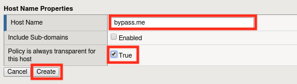

Lab 1.3: Blocking Mode Override¶
Introduction¶
If we’re going to all this trouble to build a tight WAF policy, why do we now want to override it? There can be several reasons an organization wants to enforce security policy except for specific users (IPs). These reasons include:
- Testing a new version of the Application
- Penetration testing
- Automated Scanning and patching tools
As the defined hostnames will be able to completely bypass security policy it’s important to protect the bypass hostnames.
Task 1 - Enabling Transparent Mode for certain host names¶
- Navigate to Security -> Application Security -> Headers -> Host Names
- Click Create
- 
- Click Create and then Apply Policy